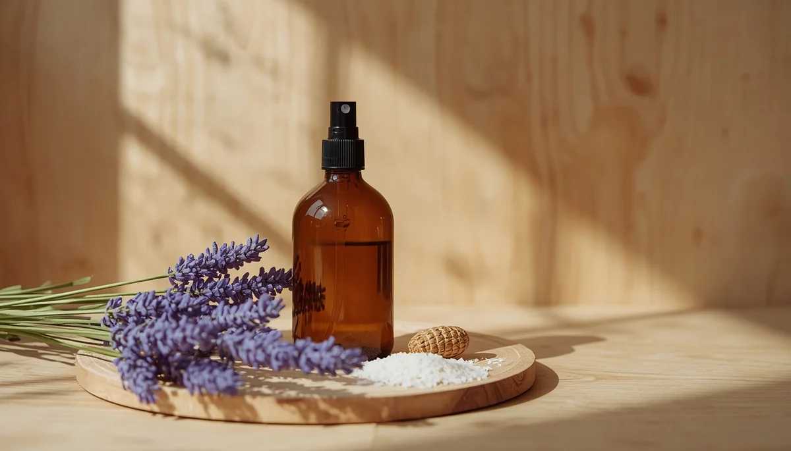

Alternativas ecológicas y limpieza sin tóxicos
Los productos de limpieza convencionales suelen contener sustancias químicas agresivas, amoníaco, blanqueadores clorados y fragancias sintéticas que se liberan al aire y se depositan en las superficies del hogar. Debido a su proximidad al suelo y a su hábito constante de llevarse las manos y objetos a la boca, los menores quedan expuestos de manera directa a estos residuos.
Sustitución de químicos por ingredientes básicos
Para la gran mayoría de las tareas de limpieza doméstica no se requieren fórmulas complejas. Ingredientes tradicionales como el vinagre blanco, el bicarbonato de sodio y el jabón neutro permiten desengrasar, desinfectar de forma suave y mantener las superficies impecables sin dejar residuos tóxicos perjudiciales para la salud infantil.
Precaución con los ambientadores y desodorizantes
Los ambientadores en spray, enchufables o en varillas enmascaran los olores liberando una gran cantidad de compuestos orgánicos volátiles e ftalatos. Ventilar de manera adecuada y eliminar el uso de estos difusores artificiales mejora de forma inmediata la pureza del aire que respiran los niños en casa.
"Limpiar el hogar de forma respetuosa no significa renunciar a la higiene, sino elegir productos sencillos que protejan la salud y la seguridad de toda la familia."
Lectura crítica del etiquetado comercial
Cuando sea necesario adquirir productos comerciales específicos, resulta fundamental revisar los pictogramas de seguridad y apostar por fórmulas con certificaciones ecológicas independientes que garanticen la ausencia de alérgenos y disruptores endocrinos.
➔ Volver al índice de Salud ambiental infantil